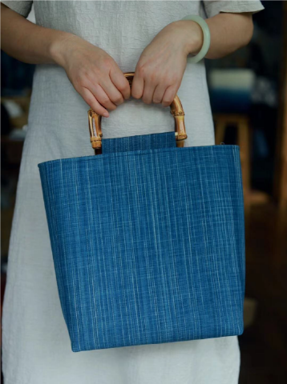
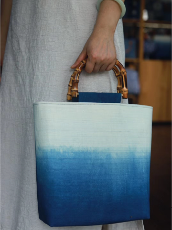
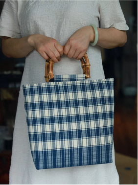
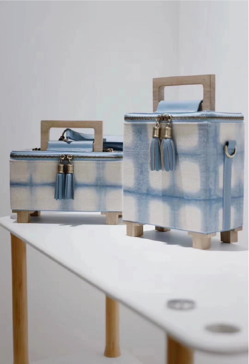
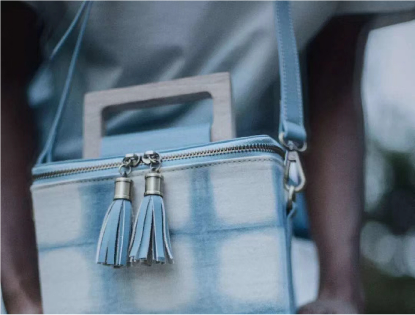
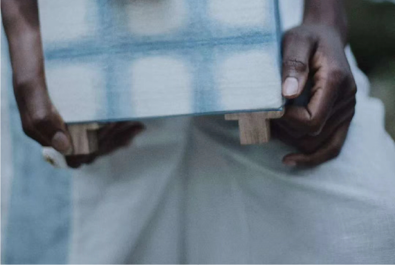
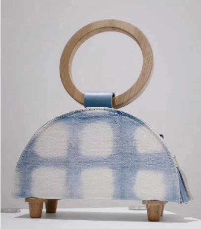

首页
蜡染简介
工艺流程
文创产品







我们当下的社会，虽然市场中的包很多，但是，有文化意义的包却是很少。我们根据了解到的有关
蜡染的文化元素，思考一个由蜡染文化创作的一个文化产品。市场上的蜡染包很多，但是，大多数都
是用来装小东西的，不能装大一点的东西，都没有特别实用的，所以我们的作品是以蜡染这一独具民
族特色的民间传统纺织印染手工艺为文化元素，做一个既经济适用又美观富有内涵的蜡染文创包。
蜡染的文化元素，思考一个由蜡染文化创作的一个文化产品。市场上的蜡染包很多，但是，大多数都
是用来装小东西的，不能装大一点的东西，都没有特别实用的，所以我们的作品是以蜡染这一独具民
族特色的民间传统纺织印染手工艺为文化元素，做一个既经济适用又美观富有内涵的蜡染文创包。
有一些的日常生活中少数民族的一些生活习惯，风俗节日，都会出现在这一系列文创蜡染包上。例
如少数民族对国家大事的记载，对国家兴旺发达的喜悦等等。这些都是反映我们少数民族的性格的质
朴、乐观、积极等，体现了民族文化的多样性。
如少数民族对国家大事的记载，对国家兴旺发达的喜悦等等。这些都是反映我们少数民族的性格的质
朴、乐观、积极等，体现了民族文化的多样性。
花技艺,也是我国非物质文化遗产保护的对象.我们致力努力保护蜡染这一传统文化工艺的传承.
让世界看见中国的美
深入了解蜡染
发现更多美好
使用是最好的传承
有意见可以提出
皖ICP-1307327号 版权所有：浸染时光网 | 地址:安徽省合肥市蜀山区五里墩街道史河路八号